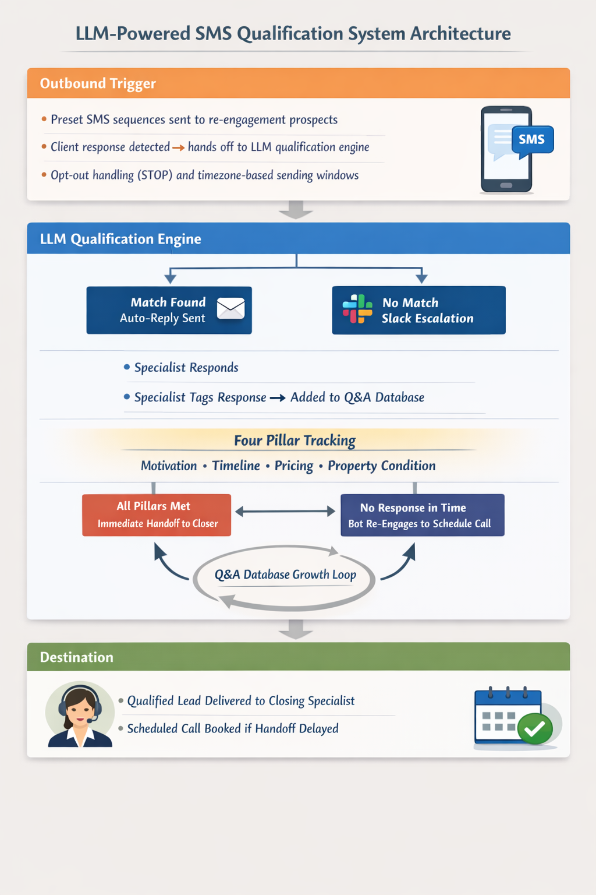
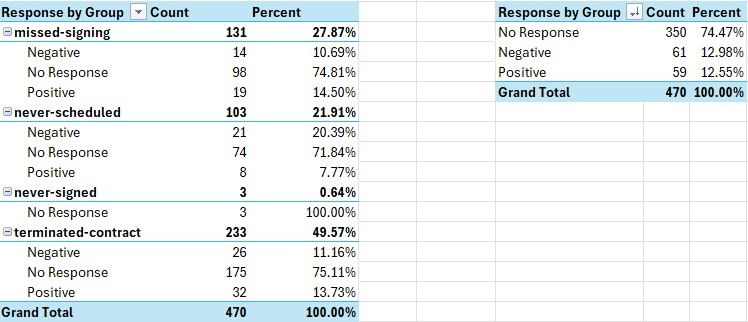

Wholesale Real Estate Joint Venture · AI & Automation
Defining the compliance guardrails, qualification logic, and human-in-the-loop escalation design for a customer-facing LLM deployment that replaced a salaried inside sales tier — reducing operational overhead by 60%.
The Business Context
The sales operation ran on three tiers. An outbound team made initial contact with prospects. An inside sales team received transferred calls, walked clients through a structured qualification process across four criteria — motivation to sell, timeline, pricing expectations, and property condition — and handed qualified deals to closing specialists. The closing specialists were the experts, and their time was the most valuable in the system. The two tiers in front of them existed primarily to ensure they only received deals worth closing.
The cost of that structure was significant. Salaried inside sales agents and outbound callers represented substantial fixed overhead. Leadership asked whether LLM technology could reduce that cost without reducing deal volume — specifically whether the outbound re-engagement function and the inside sales qualification function could be automated through SMS.
My Role
I represented the business voice throughout the development process — translating the operational logic of the sales qualification process into system requirements engineering could build against. I oversaw that the four qualification pillars were correctly implemented in the conversation flow and helped design the Slack escalation behavior including the escalation triggers, the context surfaced to agents, and the tagging mechanism for growing the response database.
I was also responsible for building the complete reporting infrastructure for both automations in Tableau — tracking outbound message response rates, conversation progression through the qualification pillars, escalation frequency, and handoff outcomes. Reviewing failed interactions and recommending behavior modifications was an ongoing part of my role.
LLM-Powered SMS Qualification System Architecture

Three-layer architecture — outbound SMS trigger with preset re-engagement sequences, LLM qualification engine with Q&A database matching and Slack escalation for unknown queries, four-pillar qualification tracking with immediate handoff on completion, and fallback scheduling logic for unanswered handoffs.
The Two Automations
Outbound SMS re-engagement — a rule-based automation that sent a preset sequence of outbound messages to re-engage prospects who had previously been contacted but hadn't converted. This was not LLM-driven. Its purpose was to restart conversations that had gone cold and create the opening for the LLM qualification system to engage.
LLM-powered qualification — when a prospect responded to an outbound message, the LLM took over. The system was designed to guide the client through the four qualification pillars via SMS conversation — establishing motivation to sell, timeline, pricing expectations, and property condition through natural dialogue rather than a scripted call.
The underlying architecture matched incoming client messages against a database of known questions and approved responses. If a match existed, the system replied automatically. If no match existed, the system escalated via a Slack integration, posting the full conversation context to a channel monitored by closing specialists. The specialist could respond as a one-off or tag the response to be added to the approved database — allowing the answer set to grow organically over time and reducing future escalation frequency.
Once a prospect was qualified across all four pillars, the system escalated immediately to the closing team via Slack. If the escalation went unanswered within a defined window, the bot would re-engage the client to schedule a call. Opt-out handling (STOP commands) and timezone-based sending windows were enforced on the outbound layer.
Outbound Re-engagement Response Analysis — Sentiment by Group

Outbound re-engagement response sentiment segmented by prior client relationship status. Terminated-contract group was the largest at 49.57% of total outreach — showing 13.73% positive response rate. Overall positive response rate of 12.55% across 470 interactions confirms the system was generating meaningful re-engagement from what were effectively cold or lost prospects.
The Outcome
Initial results were promising enough that leadership made the decision to lay off the inside sales team and reduce the outbound agent headcount significantly. The combined reduction in salaried headcount produced a 60% decrease in operational overhead from those functions. The system handled hundreds of LLM-driven qualification conversations and thousands of outbound re-engagement messages during the period it operated.
What I'd Do Differently
The Slack escalation design was well-intentioned but overengineered in practice. The logic was sound — surface unknown questions to specialists, let them respond, grow the database organically. The problem was behavioral. Closing specialists focused on their own pipeline weren't monitoring the Slack channel with the attention the system required. Escalations went unanswered. The human-in-the-loop design assumed a level of agent engagement that the operational reality didn't support.
To realize the overhead reduction the business needed, the team was reduced before the system was mature enough to operate with minimal escalation. In hindsight I would have pushed harder to reduce escalation frequency before the headcount decision was made — setting a measurable escalation rate threshold that had to be met before the staffing reduction was approved.
I'd also reconsider the rigidity of the qualification flow. The bot was focused on obtaining answers to the four pillars and clients noticed. The conversation felt transactional rather than natural. A less linear approach to qualification — allowing the conversation to flow more organically while still capturing the necessary signals — would have produced better client experience and likely higher completion rates.
Let's Talk
I'm currently exploring Senior Product Manager opportunities in platform, data systems, and operational automation — remote, nationwide.
Connect on LinkedIn →